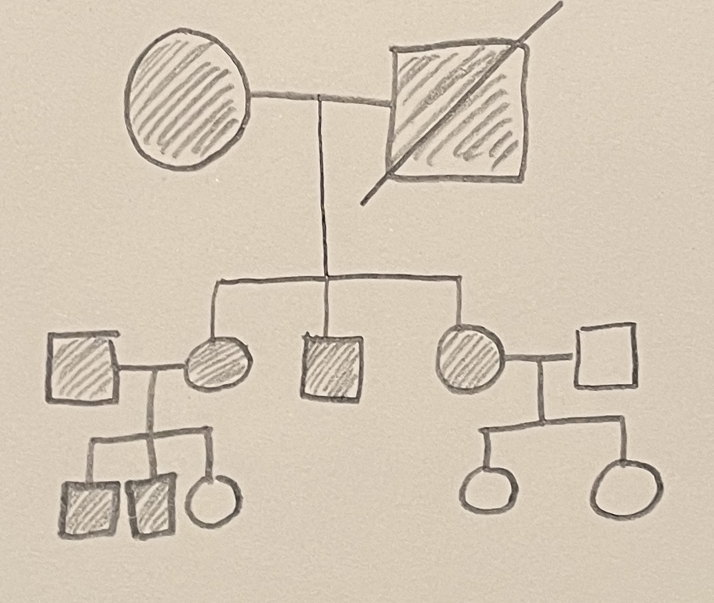
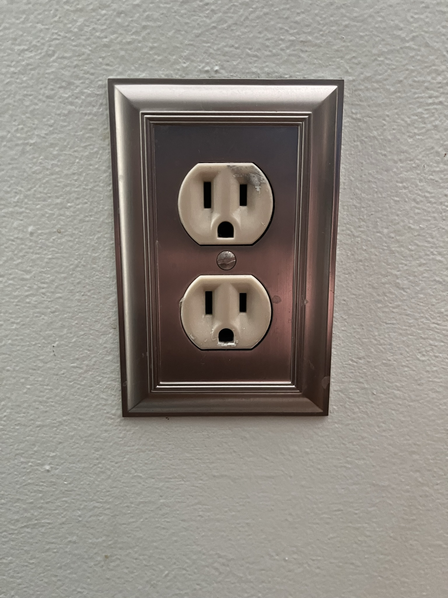
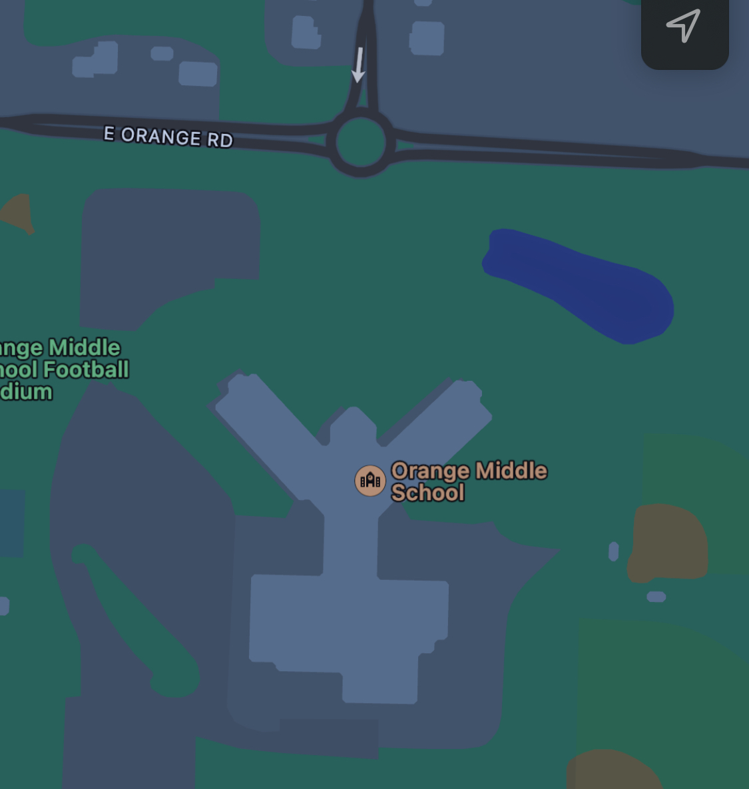
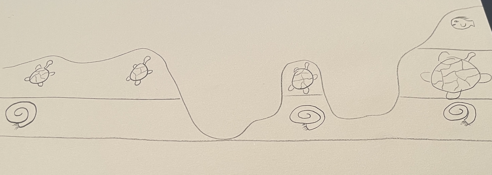
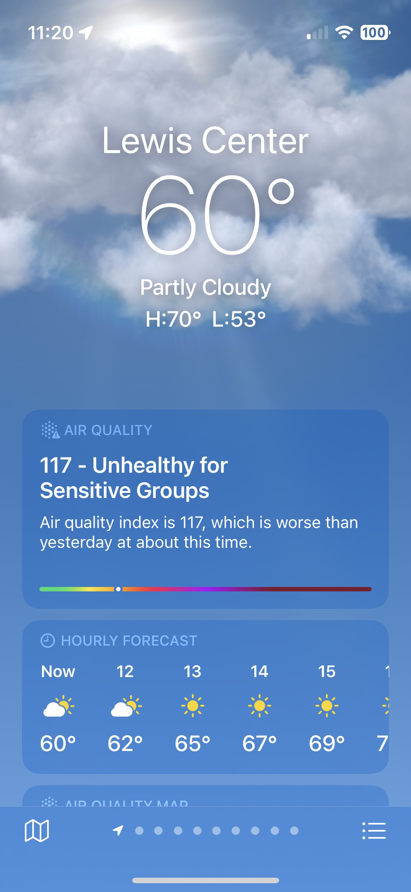
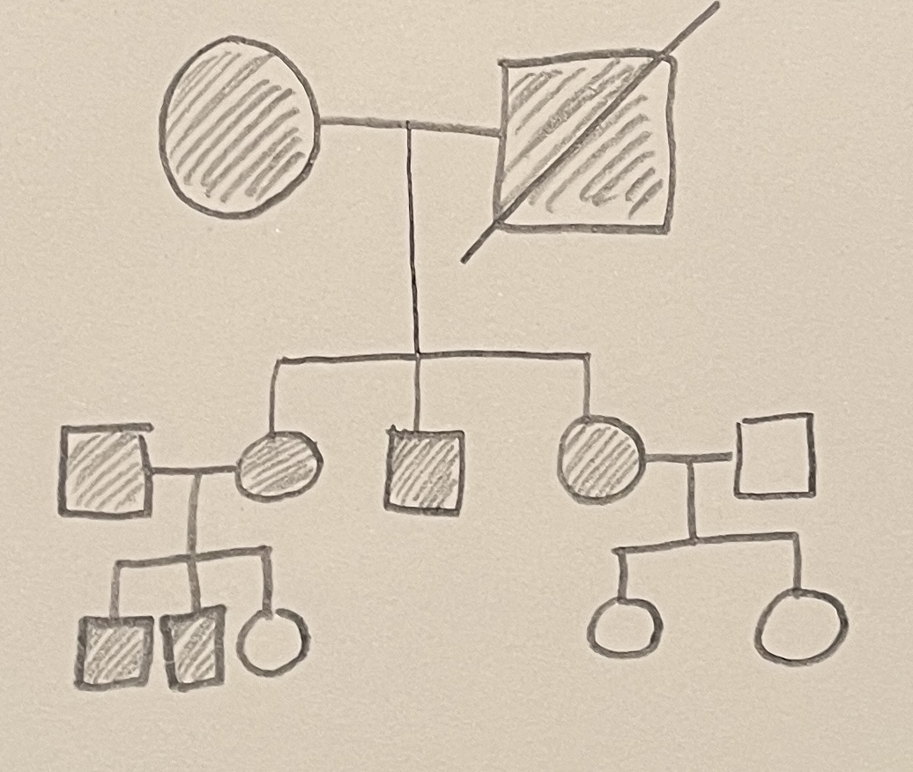
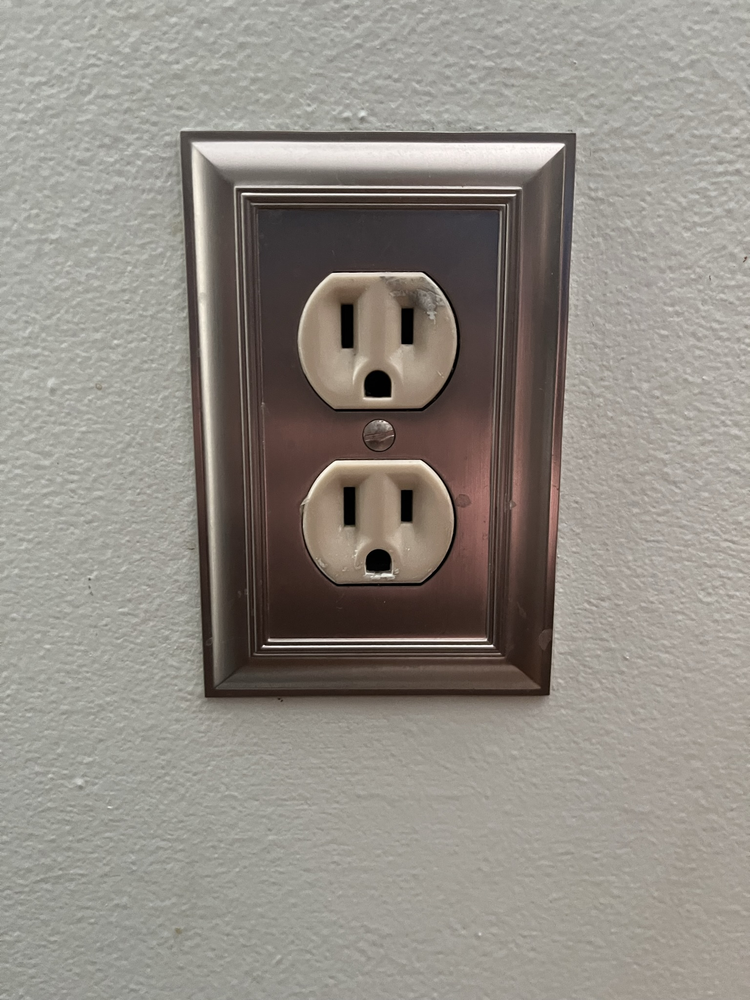
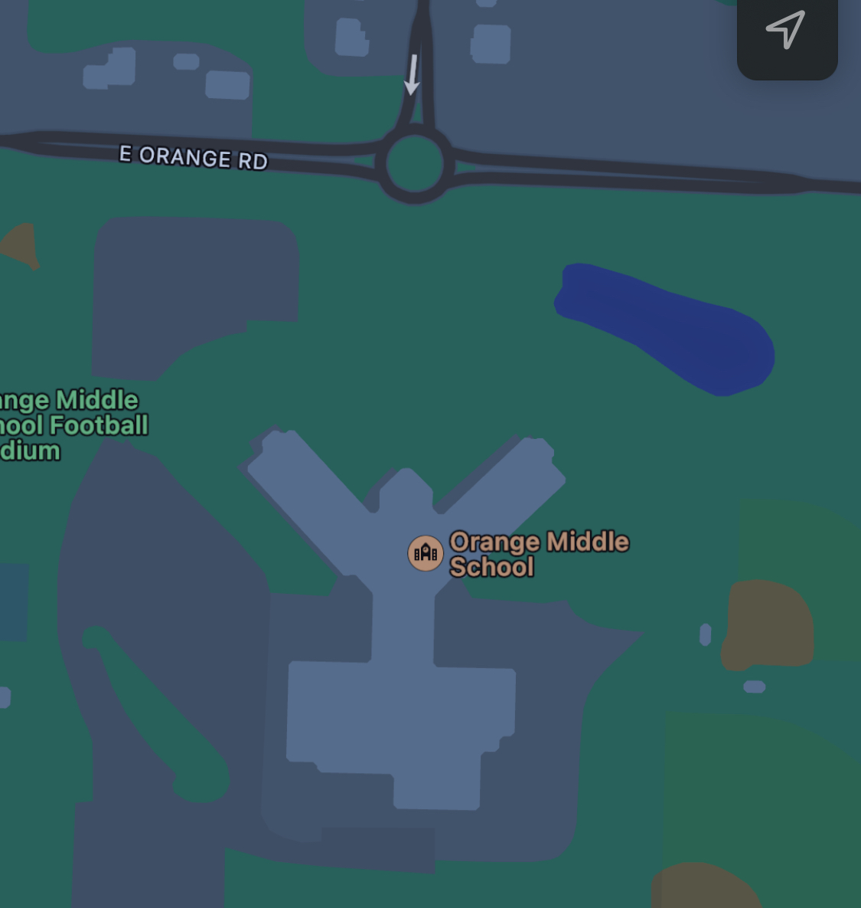
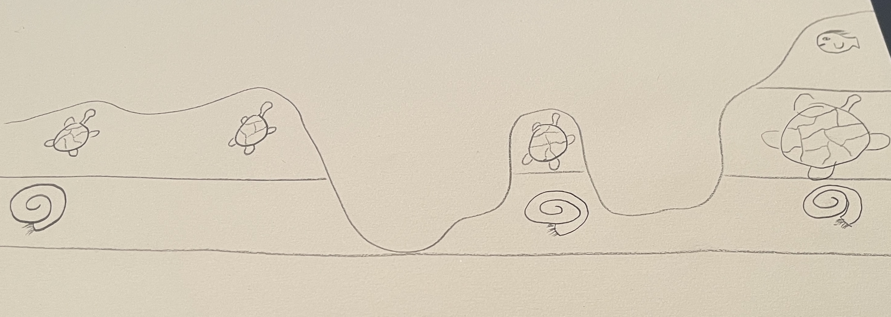
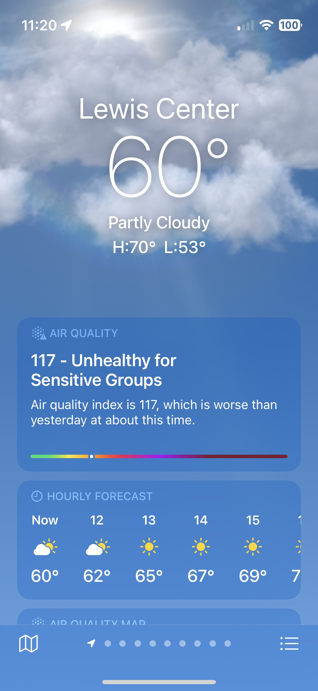

Pictures

Inheritance
Parents

Extinction
Electricity
Acceleration

Gravitational Force
Location
Fossil Distribution
Reflection
Climate Condition
Inheritance is a biology term that references inheriting genetic traits from one’s parents. This is relevant to my life, because I have parents, and I inherited traits from them. An example of this is a connection between my dad and I. When I was younger, pictures of me and pictures of my dad at the same age looked the same. The only differences were backgrounds.
Every organism has parents, therefore I, as an organism, have parents. I received my chromosomes from both parents, and the chromosomes change my DNA. This means that my parents directly affect how I look. For example, I have similarly colored eyes to my dad.
Extinction is the process of a species of plant or animal no longer having any living members. This relates to my life, because of all the dinosaurs that we used to have on our planet are extinct now. There are some plants and animals that are still around like sharks, but the dinosaurs we think of when we hear ‘dinosaur’ like velociraptors or stegosauruses are no longer living because they went extinct a long time ago.
Electricity is a non-contact force that is found all around in our daily lives. We use it to power lights, computers, and other devices. Electricity can also be used to alter magnetic fields. We can use lights after the sun has gone down to see in the dark, we can make processes faster in factories and in other manufacturing facilities.
Acceleration is the process of an object gaining speed. We accelerate whenever we start moving, because we are getting faster as we move. Another example is a car, after a full stop, a car has to slowly gain speed to get back up to its full speed. This is acceleration because the car is gaining speed and getting faster.
Gravitational force is gravity on different planets. Gravity is a force produced by objects, and the more mass that said object has, the stronger the gravitational force will be. Earth has a certain amount of mass, meaning that it has enough gravitational force to keep us on the ground. A planet with less mass, or a moon. Our moon has less mass than the Earth, so its gravitational force is weaker than Earth’s
Location is a particular position or place. We know our location, because we can use maps and GPS systems to find out where we are. We have absolute location that gives us the coordinates of where we or something else is. The other type of location is relative location, which involves using landmarks to show where something is in relation to something else.
Fossils are found almost everywhere in the world. They tell scientists where plants and animals once lived, and they can give information about what the environment was like in the past. Fossil distribution shows that where animals lived, and we can use fossils across a wide area to find out what climates or environments were like long ago.
Reflection is the returning of light particles. Mirrors show a reflection, and other surfaces can also show a reflection, like shiny metals or glossy water. We use mirrors in our everyday lives to see where other cars are on the road, or to help you get ready in the morning. Reflections have many uses, but we use them to see what we wouldn’t normally be able to see with our own eyes.
Climate conditions are the average temperatures in an area over a period of time. We can use these climate conditions to predict what the temperature may be similar to in a certain area. For example, in summer the weather is much warmer than it is in winter. We know this because over time, we have monitored the temperature and notice that the temperatures are similar during certain times of the year.
A connection that can be found between biology and geology in my presentation is related to fossils distribution and extinction. Lots of the fossils that are distributed around the world were once the bones of dinosaurs that went extinct a long time ago. Without extinction the fossils would not exist, and without the fossils we would not know about the mass extinction of dinosaurs.
A connection between biology and physics in my presentation is that found in relation to extinction and gravitational force. The gravitational force of the Earth caused the asteroid that killed all the dinosaurs to be pulled into the Earth’s surface.
A connection between physics and geology is that between gravitational force and fossil distribution. Fossils were distributed in their respective places when the animals they belonged to died. After the animal died, it was pulled to the ground because of the Earth’s gravitational force.
Inheritance
Parents
Extinction
Electricity
Acceleration
Gravitational Force
Location
Fossil Distribution
Reflection
Climate Condition